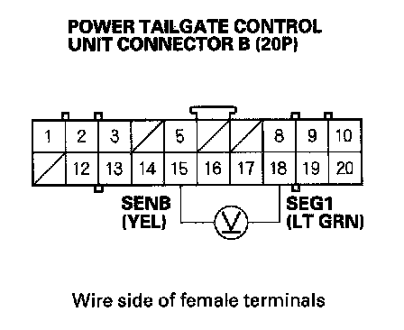

B1387
DTC B1387: Power Tailgate Sensor Pulse B Circuit MalfunctionNOTE: If the motor does not operate, do the power tailgate motor test.
1. Open the tailgate with the tailgate outer handle.
2. Close the tailgate automatically with the keyless transmitter or inside tailgate switch.
3. Turn the ignition switch OFF, and then back ON (II).
4. Clear the DTCs with the HDS.
5. Check for DTCs with the HDS.
Is DTC B1387 indicated?
YES - Go to step 6.
NO - Intermittent failure, the system is OK at this time. Check for loose or poor connections between the power tailgate control unit and the drive unit.
6. Turn the ignition switch OFF.
7. Connect the voltmeter to the power tailgate control unit B connector (20P) No. 15 and No. 18 terminals.

8. Measure the voltage between the power tailgate control unit connector B (20P) No. 15 and No. 18 terminals while the tailgate is opening and closing with the keyless transmitter or inside tailgate switch.
Does it alternate between about 0 V and 5 V?
NOTE: Digital voltmeter will read about 2.5 V.
YES - Replace the power tailgate control unit.
NO - Go to step 9.
9. Disconnect the power tailgate control unit connector B (20P).
10. Disconnect the 8P connector from the drive unit.
11. Check for continuity between the power tailgate control unit connector B (20P) No. 15 terminal and body ground.
Is there continuity?
YES - Repair short in the wire.
NO - Go to step 12.
12. Check for continuity between the power tailgate control unit connector B (20P) No. 15 and No. 18 terminals and drive unit connector B (8P) No. 6 and No. 8 terminals.
Is there continuity?
YES - Faulty power tailgate sensor B, replace the drive unit.
NO - Repair open in the wire.